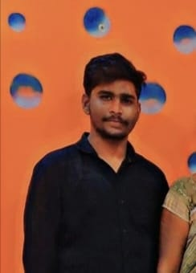

Problems of Abhishek The Great
Abhishek is the most talented person in kudurimoti
Abhishek is the richestguy in world but no one knows this bcz of his simplicity.
he is the most handsome guy in koppal as i know bcz i only seen koopal most but
i guess he is most handsomein world.but god will give trouble to everyone as we knowgod gave him fishy mind
he always face problems by god shapa(read in kannada) problems are as follow:
- all girls always follow him which makes him feel uncomfort
- girls propose him and he feel difficult to reject them bcz he dont wanna hurt girls
- but still he manage and reject girls and even he know girls always think about him whole life
- he face too much difficultyto act as common man by hiding his valuable things etc like this
I know you wanna see his pick to know how handsome he is
But wait until listen his some facts about abhishek the great then you can see his pic
- 1st achivement of Abhishek is he got followed by a girl at age less than 3 years
and she blackmailed and raped him without clothes
- He has carried a 20 litre water can from ground floor to 1 floor by his own at age 3 years
all his family members schoked like ever before
- he made a girl sindu fell love with him who scolded him to take revenge
- he made a senior girl Akshata to fall in love with him at 8th std and live with her alonein single class
- he loved megna and same as all she also loved him secretly
- lets finish fadstly his endless story in short way all nrc pu girls and murudi girls loved him secretly they
- they still remember him after many years they have him in there soul and married him mentally
- some nrc girls still propose him searching his id
- aunty name girl life time dream is to be his wife atleast one day
- she offered him physical and begged him for it she ready to sacrifice everything in her life even her life
Abhishek the legend pic :-----terarararrarararara
